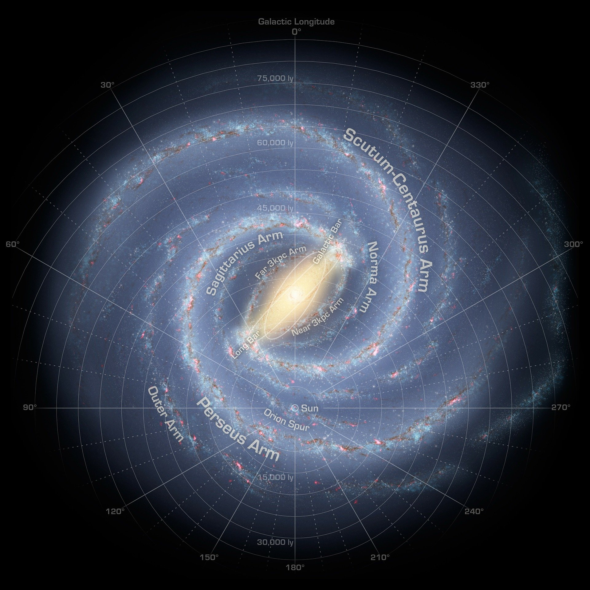
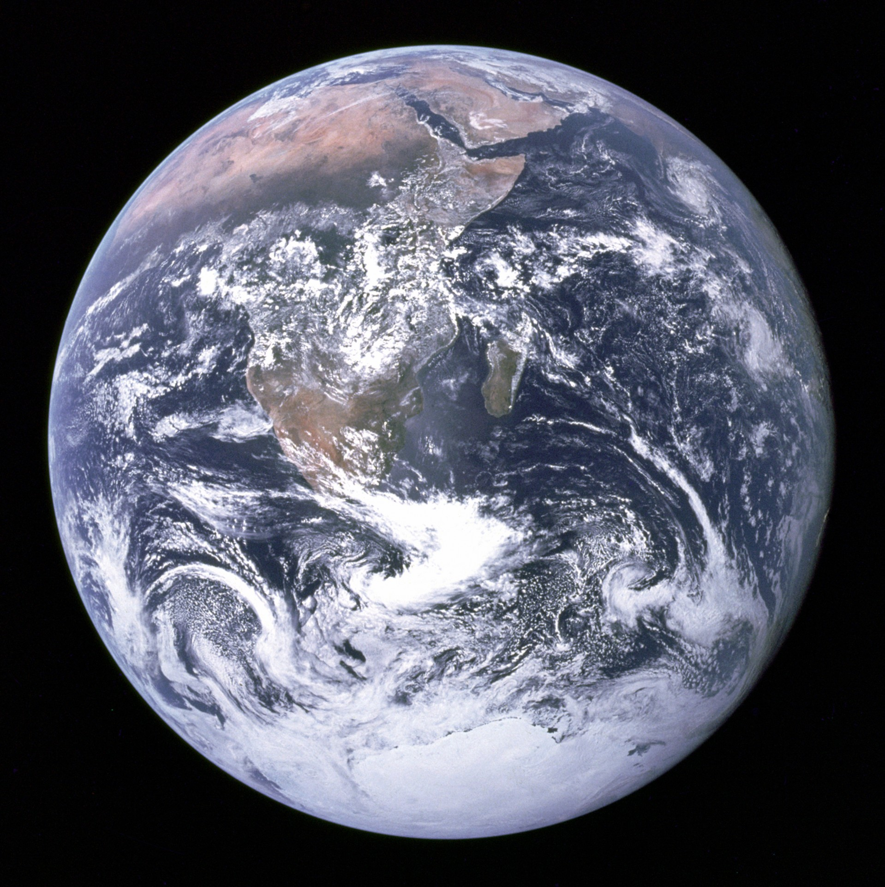

Dónde estamos
El conocimiento de la ubicación de la Tierra en el universo se ha construido gracias a unos 400 años de observaciones realizadas con telescopio y se ha afinado sustancialmente en el siglo XX. Antiguamente se consideraba que la Tierra era el centro del universo, el cual se creía que estaba formado únicamente por los planetas visibles a simple vista y por una periferia de estrellas fijas.
Después de la aceptación del heliocentrismo en el siglo XVII, las observaciones de William Herschel y otros astrónomos mostraron que el Sol se encontraba dentro de una vasta galaxia con forma de disco y muchas otras estrellas. En el siglo XX, las observaciones de nebulosas espirales por Edwin Hubble revelaron que nuestra galaxia era una de miles de millones en un universo en expansión, agrupadas en cúmulos y supercúmulos. A finales del siglo XX, la estructura general del universo observable se estaba volviendo más clara, con supercúmulos formando en una vasta red de filamentos y vacíos. Los supercúmulos, filamentos y vacíos son las mayores estructuras coherentes en el Universo que podemos observar. A escalas aún más grandes (más de 1.000 megaparsecs) el Universo se vuelve homogéneo, es decir, que todas sus partes tienen, en promedio, la misma densidad, composición y estructura.
Desde que se cree que el universo no tiene ni centro ni límites, no hay un punto de referencia particular con el que trazar la ubicación general de la Tierra en el universo. Se puede hacer referencia a la posición de la Tierra con respecto a estructuras específicas que existen en diversas escalas. Numerosas hipótesis se han formulado sobre nuestro universo como su posible dimensión infinita o su posible pertenencia a un multiverso, sin embargo, aún no se han conseguido evidencias concluyentes sobre esas hipótesis.
Bien, pues la Tierra está localizada en el universo en el Supercúmulo de galaxias Virgo. Un Supercúmulo es un grupo de galaxias juntas por la gravedad. Dentro de este Supercúmulo estamos en un grupo más pequeño de galaxias llamado el Grupo Local. La Tierra está en la segunda galaxia más grande del Grupo Local---una galaxia llamada la Vía Láctea. La Vía Láctea es una galaxia espiral grande. La Tierra está localizada en uno de los brazos espirales de la Vía Láctea (llamado el brazo de Orión) el cual está alrededor de 2/3 partes del camino desde el centro de la galaxia. Nosotros somos parte del Sistema Solar---un grupo de nueve planetas, así como de numerosos cometas y asteroides que orbitan al Sol. Somos el tercer planeta desde el Sol en el Sistema Solar.
| Distancia Al Sol | Diámetro | T. Traslación | T. Rotación | Temperatura | Masa | Densidad | Superficie | Volumen | Satélites | Atmósfera | Imagen |
|---|---|---|---|---|---|---|---|---|---|---|---|
| 149.600.000 Km | 12.756 Km | 365 días | 24 horas | Min: -88º C. Max: 58º C | 5,9722 x 1024 Km | 5.513 g/cm3 | 510.072.000 Km2 | 1.083.206.916,846 Km3 | 1 | Nitrógeno y oxígeno |  |
Referencias
Cool Cosmos: Localización de la Tierra
Wikipedia: Ubicación de la Tierra en el Universo